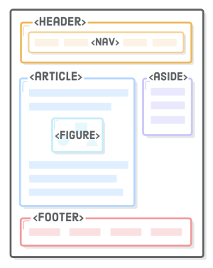
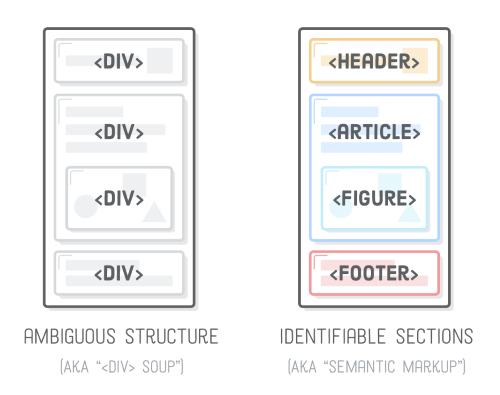

Well done, you made it through!!!

“Semantic HTML” refers to the idea that all your HTML markup should convey the underlying meaning of your content—not its appearance. We’ve already been writing semantic HTML (e.g., using <strong> instead of <b>), but there’s a whole set of elements designed for the sole purpose of adding more meaning to the overall layout of a web page. They’re called “sectioning elements”, and they look something like this:
Using these as an alternative to <div> elements is an important aspect of modern web development because it makes it easier for search engines, screen readers, and other machines to identify the different parts of your website. It also helps you as a developer keep your site organized, which, in turn, makes it easier to maintain.
| Semantic Markup | Description |
|---|---|
| <Strong> | Indicates content has strong importance. Browsers will default to show this in bold |
| <em> | Shows emphasis. Usually show in italics |
| <blockquotes> | Used for longer quotes |
| <q> | Used for shorter quotes in a paragraph |
| <cite> | Used for referencing a piece of work e.g. a book, article etc |
| <address> | Used to indicate contact details |
By using semantic tags it allows styles to be applied more simply and logically using CSS. For example, you could set all <blockquotes> to the same styling properties (e.g. font, background color, alignment etc) throughout the pages the stylesheet is linked to. In turn this makes updating much more straightforward to do.
A second important tip is to use 'classes' with tags where we want to identify and style individual elements. For example, we may have <h2> headings that use a common set of styles, however we may want to give each heading a different background color. In this instance we would create a common style for the shared elements and apply these to the <h2> tag, but create a class = descriptor inside the tag as an additional reference point. We would then add the background color property and value to the relevant 'class'in the style sheet.
The three most important selectors to be aware of are:
| Selector | Meaning |
|---|---|
| Type selector | Matches element name |
| Class selector | Matches an element whose class attribute has a value that matches the one specified after the full stop symbol |
| ID selector | Matches an element whose id attribute has a value that matches the one specified after the hash symbol |
If you have any other tips to share please get in contact with me at matt.caswell@hotmail.com